Making healthy habits worth coming back for.
I designed new features for Discovery's Vitality app, a large legacy insurance app that rewards members for healthier choices. For most of the project I led design for my part of the app, working on personalised goals, game-style rewards and a clearer dashboard.
- Role
- UX/UI Designer
- Timeline
- Jan 2019 — Oct 2021
- Platform
- Native iOS & Android, responsive web
- Industry
- Health & fitness · Insurance
- Tools
- Sketch, Figma, Zeplin, Keynote, Illustrator, After Effects
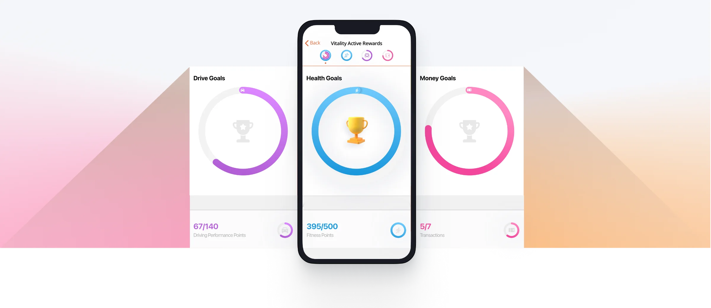
Vitality rewards Discovery members for healthier choices. The app is how they track goals, earn points and claim rewards. With so many health and fitness apps competing for attention, my job was to make that experience personal and motivating enough to keep people engaged week after week.
Starting healthy habits is easy. Keeping them is hard.
Many people lack the motivation and guidance to make lasting changes. In a crowded market of health and fitness apps, Vitality needed to stand out and support members through the whole journey to a sustainable, healthy lifestyle.
- Low user engagement and motivation.
- Long-term adherence and behaviour change.
- Growing user acquisition.
Leading design for my part of a very large app.
The app was big enough that several design and development teams each owned a part of it. Teams changed often, but for most of the project I led design for my assigned part of the app, working with cross-functional teams and developers.
A legacy app and two dev teams to align.
Working in a legacy app meant designing around outdated, inconsistent UI. The team structure also meant bringing two development teams into line so features behaved the same across platforms.
From research to live, and back again.
- 01Research & ideate
- 02Collaborate on design
- 03Development handover
- 04Design QA
- 05Iterate through feedback
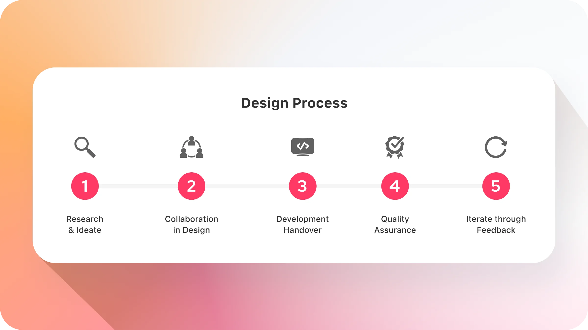
Start with how members actually use the app.
Problem statement
Framed a problem statement that bridged business goals and member needs.
Competitive analysis
Looked at what made competitors succeed or fail, and where we could do better.
User testing
Tested with new and existing members to understand how they think, navigate and feel in the app.
Google Analytics
Used retention, conversion and interaction data to understand behaviour and guide design decisions.
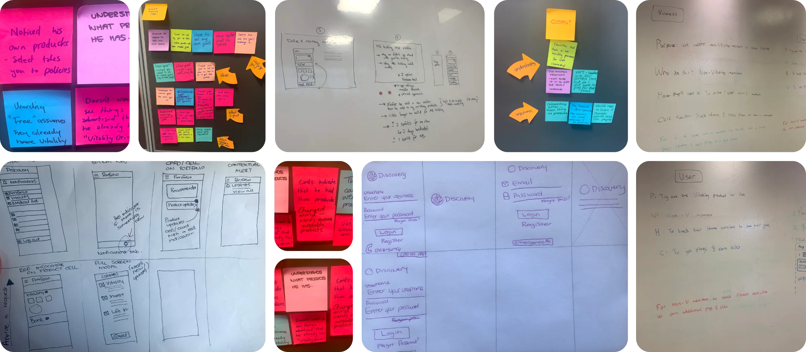
Business, developers and designers in the room early.
Business involvement
Worked closely with the business throughout. That trust gave room to explore new ideas and surface risks early.
Developer input
Ran workshops and huddles with developers to check feasibility and review iterations, saving rework later.
Design reviews
Held regular design critiques for knowledge sharing, consistency and different perspectives on a problem.
Design system
Helped build and maintain the mobile design system, consolidating reusable components and styles for design and development.
Handover that developers can build from.
I organised and exported designs and assets in Zeplin, then moved handover to Figma when the team migrated from Sketch. Clean handover sped up developers' work and kept components consistent and reusable.
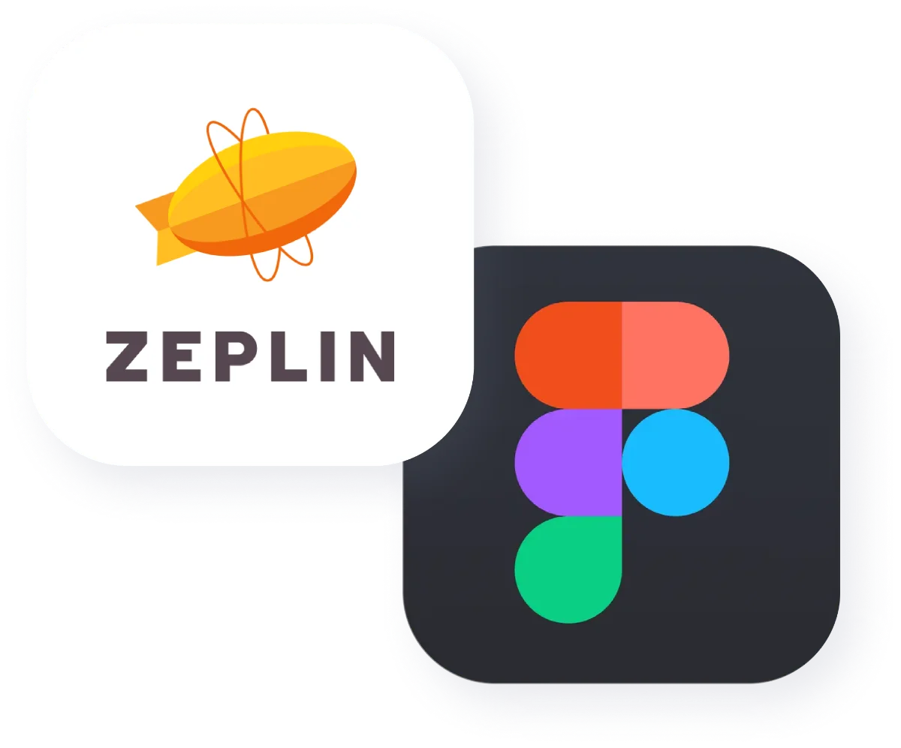
Checking every user type, scenario and error.
I tested builds regularly in both testing and production environments, covering different user types, scenarios and error states. I documented and raised every mismatch in UI or interaction, with expected and actual results side by side.
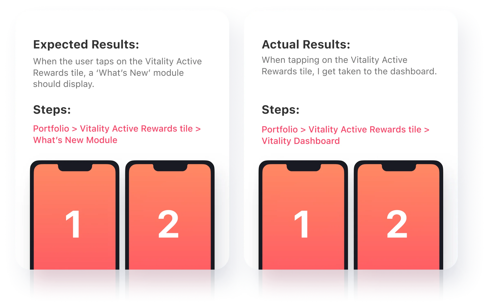
Before and after.
Business and member feedback drove steady rounds of iteration on the most-used screens.
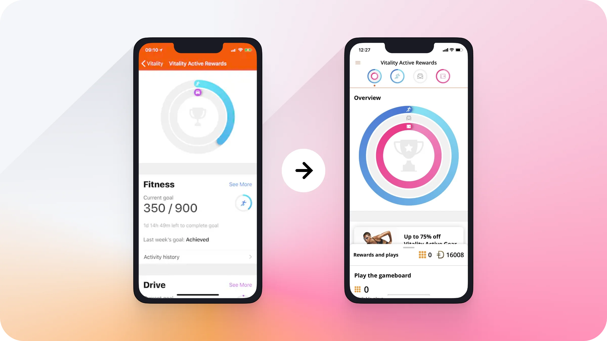
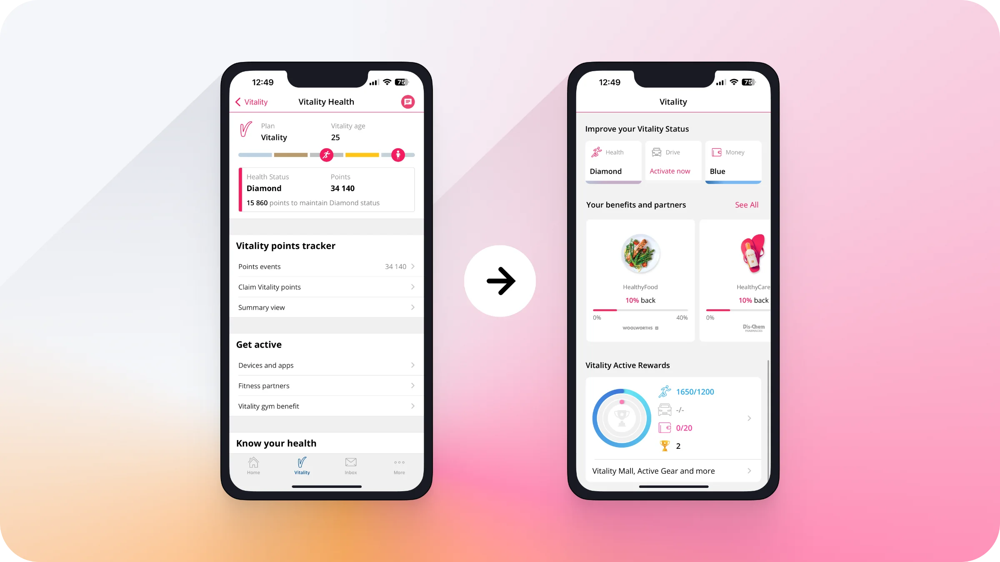
Personal goals and rewards people can feel.
Research showed where to improve. We tailored the experience to each member's behaviour and needs, and backed it with a reward system that gives real incentives for progress.
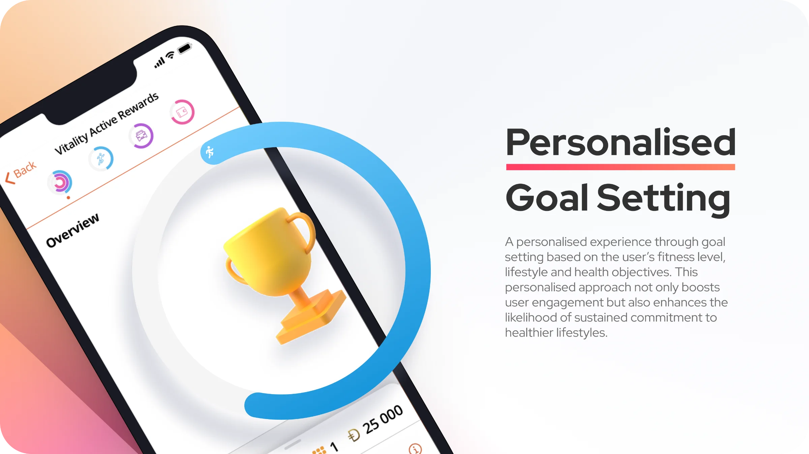
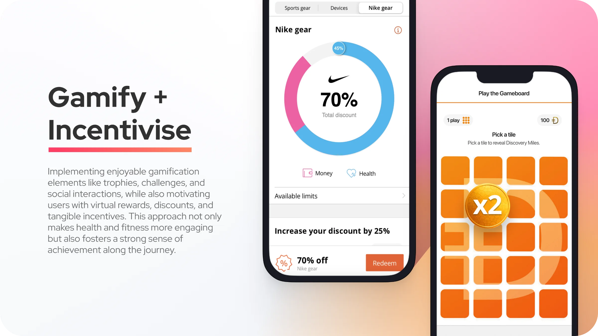
Set goals. Get active. Get rewarded.
Targets that fit each member's routine
Goals are based on each member's behaviour and daily routine, from vaccinations to healthy food purchases and mental wellbeing minutes. They stay realistic and achievable, so they inspire rather than overwhelm.
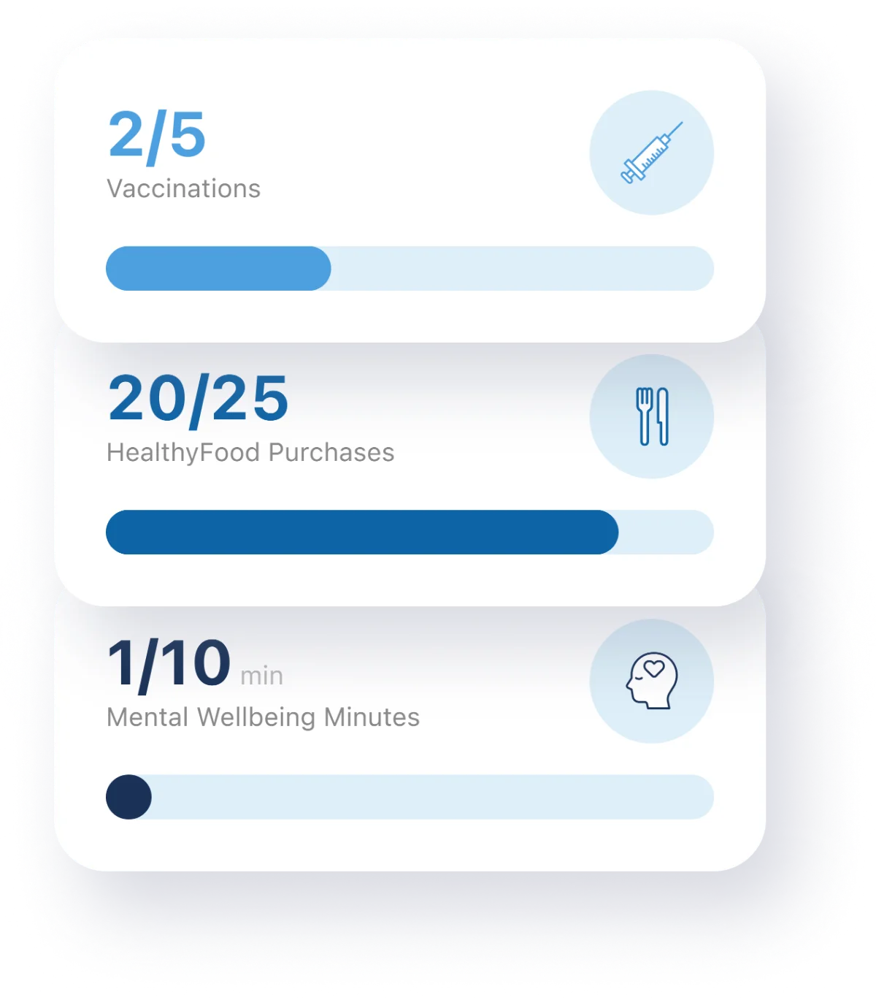
Points for every kind of activity
Running, cycling, swimming, yoga and more all earn points. Points build a member's Vitality status, and a higher status means better rewards.
A weekly gameboard with real prizes
Each week, members who stay active can play the gameboard and pick tiles to win Discovery Miles, a digital currency, or real rewards like coffees and vouchers.
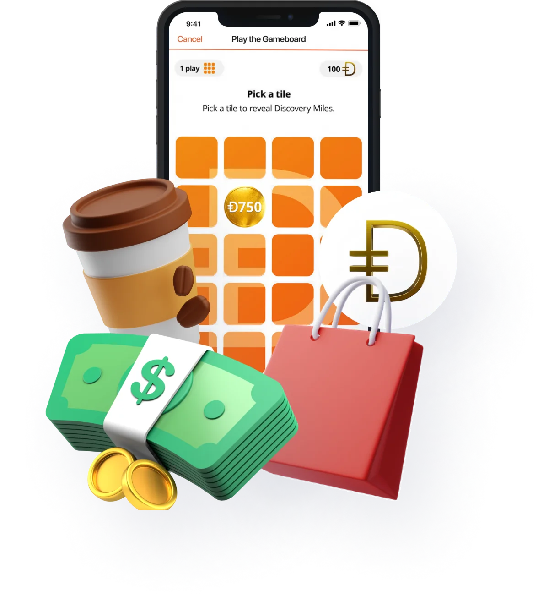
More members using the app, more often.
- Owning a whole platform. Overseeing the complete Vitality product on iOS taught me management, leadership and full ownership of outcomes.
- Growing other designers. I guided, supervised and mentored junior designers as they joined and contributed to the project.
- Adapting to change. A large, diverse and ever-changing team meant regularly adjusting to new ways of working.
Keynote prototype for a launch event.
I built this prototype for an event announcing new functionality. The new features rewarded members for completing assessments, staying active and holding certain products, which together raised their discount on sports gear and apparel.
The prototype showed a realistic experience from the member's point of view, including the visuals, animations, interactions and overall flow.